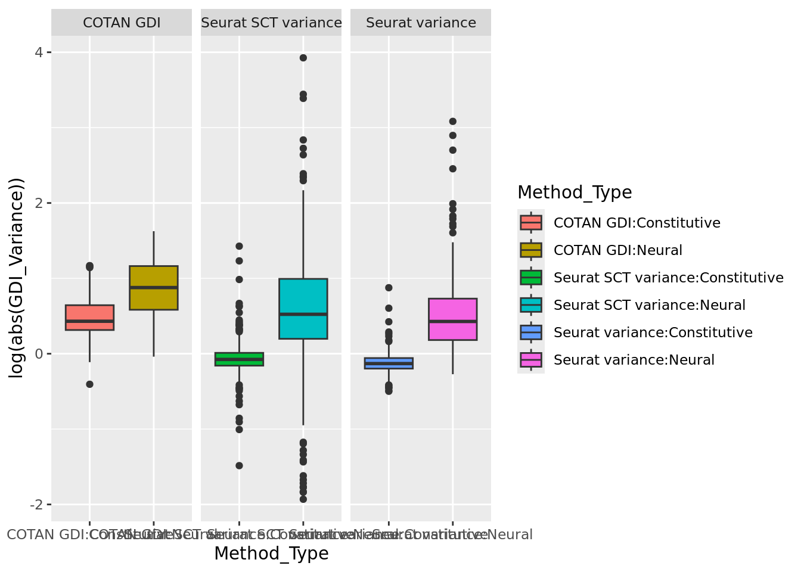

library(tidyr)
library(stringr)
library(ggplot2)
library(gghalves)
library(ggstatsplot)
library("gridExtra")
library(cowplot)
library(Matrix)
library(ggstance)
library(scales)
#library(COTAN)
#Define colors
colors.methods <- c("#ed5537","#a3505c","#95ba8f","#B3CDE3","#8856A7" )GDI and variance
Preamble
layer.genes <- read.csv("CoexData/aam8999_tables6.csv", header = T,skip = 1)
HK <- read.csv("CoexData/MouseconstitutiveGenesCerebralCortex.csv")
## From: https://housekeeping.unicamp.br/
genesList <- list(
"NPGs"=
c("Nes", "Vim", "Sox2", "Sox1", "Notch1", "Hes1", "Hes5", "Pax6"),
"PNGs"=
c("Map2", "Tubb3", "Neurod1", "Nefm", "Nefl", "Dcx", "Tbr1"),
"hk"= c(sample(unique(HK$Gene.Symbol),size = 40),
"Calm1", "Cox6b1", "Ppia", "Rpl18", "Cox7c", "Erh", "H3f3a", "Taf1", "Taf2", "Gapdh", "Actb", "Golph3", "Zfr", "Sub1",
"Tars", "Amacr","Tbp"),
"layers" = unique(c(layer.genes[str_detect(layer.genes$Cluster,pattern = "CTX PyrL5|CTX PyrL6"),"Gene"],
#c(
"Rasgrf2", "Slc17a6", "Satb2", "Sema3c","Thsd7a", "Rorb", "Cux2", "Pvrl3","Rasgrf2","Syt6", "Grik3", "Foxp2", "Tle4", "Htr1f","Rxfp1",
#others
"Pax3", "Mki67","Lhx6","Trdn", "Cpa6","Adarb2","Pbx3","Trp73", "Reln"))
#c("Reln","Lhx5","Cux1","Satb2","Tle1","Mef2c","Rorb","Sox5","Bcl11b","Fezf2","Foxp2","Ntf3","Rasgrf2","Pvrl3", "Cux2","Trp73")
#sample(unique(unlist(str_split(layer.genes$supertype.markers.combo,pattern = ","))),size = 50)
#c("Reln","Lhx5","Cux1","Satb2","Tle1","Mef2c","Rorb","Sox5","Bcl11b","Fezf2","Foxp2","Ntf3","Rasgrf2","Pvrl3", "Cux2","Slc17a6", "Sema3c","Thsd7a", "Sulf2", "Kcnk2","Grik3", "Etv1", "Tle4", "Tmem200a", "Glra2", "Etv1","Htr1f", "Sulf1","Rxfp1", "Syt6")
# From https://www.science.org/doi/10.1126/science.aam8999
)
InDir <- "CoexData/"Import data
Import COTAN GDI and Seurat variances data from files
table.tot.hk <- NA
table.tot.neural <- NA
for (file in list.files(InDir,pattern = "Variance")) {
#print(file)
data <- read.csv(paste0(InDir,file),row.names = 1)
#data <- as.data.frame(as.matrix(data))
if(str_detect(file,pattern = "GDI")){
code <- "COTAN GDI"
data$genes <- rownames(data)
#data <- data[,c("genes","GDI","sum.raw.norm")]
data <- data[,c("genes","GDI_centered","sum.raw.norm")]
colnames(data) <- c("genes","GDI_Variance","sum.raw.norm")
#data$GDI_Variance <- scale(data$GDI_Variance,center = T)
}else if(str_detect(file,pattern = "SeuratSCT")){
code <- "Seurat SCT variance"
data$genes <- rownames(data)
#data <- data[,c("genes","residual_variance")]
data <- data[,c("genes","centered_variance")]
colnames(data) <- c("genes","GDI_Variance")
data$sum.raw.norm <- NA
#data$GDI_Variance <- scale(data$GDI_Variance,center = T)
}else if(str_detect(file,pattern = "Seurat_")){
code <- "Seurat variance"
data$genes <- rownames(data)
#data <- data[,c("genes","variance.standardized")]
data <- data[,c("genes","centered_variance")]
colnames(data) <- c("genes","GDI_Variance")
data$sum.raw.norm <- NA
#data$GDI_Variance <- scale(data$GDI_Variance,center = T)
#print("ok")
}
data$Method <- code
file <- str_remove(file,pattern = ".csv")
file <- str_flatten(str_split(file,
pattern = "_",simplify = T)[,c(3,4)],
collapse = "_")
file <- str_remove(file,pattern = "genes")
data$Dataset <- file
table.hk <- data[rownames(data) %in% genesList$hk,]
table.tot.hk <- rbind(table.tot.hk,table.hk)
#table.tot.hk <- table.tot.hk[! table.tot.hk$Gene1 == table.tot.hk$Gene2,]
#Not hk
table.neural <- data[rownames(data) %in% c(genesList$NPGs,genesList$PNGs,genesList$layers),]
table.tot.neural <- rbind(table.tot.neural,table.neural)
#table.tot.neural <- table.tot.neural[! table.tot.neural$Gene1 == table.tot.neural$Gene2,]
}
table.tot.neural$Type <- "Neural"
table.tot.hk$Type <- "Constitutive"
table.tot.neural <- table.tot.neural[2:nrow(table.tot.neural),]
table.tot.hk <- table.tot.hk[2:nrow(table.tot.hk),]
table.tot <- rbind(table.tot.hk,table.tot.neural)
table.tot$Method_Type <- paste0(table.tot$Method,":",table.tot$Type)ggplot(table.tot,aes(x=(GDI_Variance), fill=Method_Type))+geom_histogram(bins = 50, alpha=0.7,position = "dodge")+ facet_grid(.~ Method,scales = "free")ggplot(table.tot,aes(x=(GDI_Variance), fill=Method_Type))+geom_density(alpha=0.5)+ facet_grid(.~ Method)+xlim(-3,5)ggplot(table.tot,aes(y=log(abs(GDI_Variance)),x=Method_Type, fill=Method_Type))+geom_boxplot()+ facet_grid(.~ Method,scales = "free")